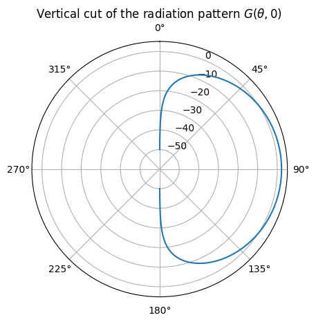
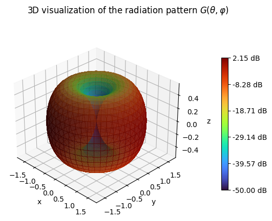

Antenna Patterns
We refer the user to the section “Far Field of a Transmitting Antenna” for various useful
definitions and background on antenna modeling. An
AntennaPattern can be single- or
dual-polarized and might have for each polarization direction a possibly
different pattern. One can think of a dual-polarized pattern as two colocated
linearly polarized antennas.
Mathematically, an antenna pattern is defined as a function \(f:(\theta,\varphi)\mapsto (C_\theta(\theta, \varphi), C_\varphi(\theta, \varphi))\) that maps a pair of zenith and azimuth angles to zenith and azimuth pattern values.
- class sionna.rt.AntennaPattern[source]
Abstract class for antenna patterns
Any instance of this class must implement the
patternsproperty which returns a list of one or two antenna patterns for single- or dual-polarized antennas, respectively.- compute_gain(polarization_direction=0, num_samples=1000, verbose=True)[source]
Computes directivity, gain, and radiation efficiency of the antenna pattern of one of the polarization directions
Given a function \(f:(\theta,\varphi)\mapsto (C_\theta(\theta, \varphi), C_\varphi(\theta, \varphi))\) describing an antenna pattern (14), this function computes the directivity \(D\), gain \(G\), and radiation efficiency \(\eta_\text{rad}=G/D\) (see (12)).
- Parameters:
polarization_direction (
int) – Polarization direction (0 | 1)num_samples (
int) – Number of discretization steps for numerical integrationverbose (
bool) – If True, the results are pretty printed.
- Return type:
typing.Tuple[drjit.llvm.ad.Float,drjit.llvm.ad.Float,drjit.llvm.ad.Float]- Returns:
Directivity \(D\), gain \(G\), and radiation efficiency \(\eta_\text{rad}=G/D\)
Example
from sionna.rt import PlanarArray array = PlanarArray(num_rows=1, num_cols=1, pattern="tr38901", polarization="V") d, g, eta = array.antenna_pattern.compute_gain();
Directivity [dB]: 9.825768560205825 Gain [dB]: 7.99998570013805 Efficiency [%]: 65.67826867103577
- property patterns
List of antenna patterns for one or two polarization directions. The pattern of a specific polarization direction can be also accessed by indexing the antenna pattern instance.
- Type:
List[Callable[[mitsuba.Float,mitsuba.Float],Tuple[mitsuba.Complex2f,mitsuba.Complex2f]]]
- show(polarization_direction=0)[source]
Visualizes the antenna gain of the antenna pattern of one of the polarization directions
This function visualizes the directional antenna gain with the help of three figures showing the vertical and horizontal cuts as well as a three-dimensional visualization.
- Parameters:
polarization_direction (
int) – Polarization direction (0 | 1)- Return type:
typing.Tuple[matplotlib.figure.Figure,matplotlib.figure.Figure,matplotlib.figure.Figure]- Returns:
Vertical cut, horizontal cut, and 3D visualization of the antenna gain
Example
from sionna.rt import PlanarArray array = PlanarArray(num_rows=1, num_cols=1, pattern="dipole", polarization="V") array.antenna_pattern.show()



{kind=link}
{kind=link}
- class sionna.rt.PolarizedAntennaPattern(*, v_pattern, polarization, polarization_model='tr38901_2')[source]
Transforms a vertically polarized antenna pattern function into an arbitray single- or dual-polarized antenna pattern based on a polarization and polarization model
- Parameters:
v_pattern (
typing.Callable[[drjit.llvm.ad.Float,drjit.llvm.ad.Float],drjit.llvm.ad.Complex2f]) – Vertically polarized antenna pattern functionpolarization (
str) – Name of registered polarization (“V” | “H” | “VH” | “cross”)polarization_model (
str) – Name of registered polarization model (“tr38901_1” | “tr38901_2”)
- compute_gain(polarization_direction=0, num_samples=1000, verbose=True)
Computes directivity, gain, and radiation efficiency of the antenna pattern of one of the polarization directions
Given a function \(f:(\theta,\varphi)\mapsto (C_\theta(\theta, \varphi), C_\varphi(\theta, \varphi))\) describing an antenna pattern (14), this function computes the directivity \(D\), gain \(G\), and radiation efficiency \(\eta_\text{rad}=G/D\) (see (12)).
- Parameters:
polarization_direction (
int) – Polarization direction (0 | 1)num_samples (
int) – Number of discretization steps for numerical integrationverbose (
bool) – If True, the results are pretty printed.
- Return type:
typing.Tuple[drjit.llvm.ad.Float,drjit.llvm.ad.Float,drjit.llvm.ad.Float]- Returns:
Directivity \(D\), gain \(G\), and radiation efficiency \(\eta_\text{rad}=G/D\)
Example
from sionna.rt import PlanarArray array = PlanarArray(num_rows=1, num_cols=1, pattern="tr38901", polarization="V") d, g, eta = array.antenna_pattern.compute_gain();
Directivity [dB]: 9.825768560205825 Gain [dB]: 7.99998570013805 Efficiency [%]: 65.67826867103577
- property patterns
List of antenna patterns for one or two polarization directions. The pattern of a specific polarization direction can be also accessed by indexing the antenna pattern instance.
- Type:
List[Callable[[mitsuba.Float,mitsuba.Float],Tuple[mitsuba.Complex2f,mitsuba.Complex2f]]]
- show(polarization_direction=0)
Visualizes the antenna gain of the antenna pattern of one of the polarization directions
This function visualizes the directional antenna gain with the help of three figures showing the vertical and horizontal cuts as well as a three-dimensional visualization.
- Parameters:
polarization_direction (
int) – Polarization direction (0 | 1)- Return type:
typing.Tuple[matplotlib.figure.Figure,matplotlib.figure.Figure,matplotlib.figure.Figure]- Returns:
Vertical cut, horizontal cut, and 3D visualization of the antenna gain
Example
from sionna.rt import PlanarArray array = PlanarArray(num_rows=1, num_cols=1, pattern="dipole", polarization="V") array.antenna_pattern.show()
Vertically Polarized Antenna Pattern Functions
- sionna.rt.antenna_pattern.v_iso_pattern(theta, phi)[source]
Vertically polarized isotropic antenna pattern function
- Parameters:
theta (
drjit.llvm.ad.Float) – Elevation angle [rad]phi (
drjit.llvm.ad.Float) – Elevation angle [rad]
- Return type:
drjit.llvm.ad.Complex2f
- sionna.rt.antenna_pattern.v_dipole_pattern(theta, phi)[source]
Vertically polarized short dipole antenna pattern function from (Eq. 4-26a) [Bal97]
- Parameters:
theta (
drjit.llvm.ad.Float) – Elevation angle [rad]phi (
drjit.llvm.ad.Float) – Elevation angle [rad]
- Return type:
drjit.llvm.ad.Complex2f
- sionna.rt.antenna_pattern.v_hw_dipole_pattern(theta, phi)[source]
Vertically polarized half-wavelength dipole antenna pattern function from (Eq. 4-84) [Bal97]
- Parameters:
theta (
drjit.llvm.ad.Float) – Elevation angle [rad]phi (
drjit.llvm.ad.Float) – Elevation angle [rad]
- Return type:
drjit.llvm.ad.Complex2f
- sionna.rt.antenna_pattern.v_tr38901_pattern(theta, phi)[source]
Vertically polarized antenna pattern function from 3GPP TR 38.901 (Table 7.3-1) [3GPP]
- Parameters:
theta (
drjit.llvm.ad.Float) – Elevation angle [rad]phi (
drjit.llvm.ad.Float) – Elevation angle [rad]
- Return type:
drjit.llvm.ad.Complex2f
Polarization Models
- sionna.rt.antenna_pattern.polarization_model_tr38901_1(c_theta_tilde, theta, phi, slant_angle)[source]
Model-1 for polarized antennas from 3GPP TR 38.901 [3GPP]
Transforms a vertically polarized antenna pattern \(\tilde{C}_\theta(\theta, \varphi)\) into a linearly polarized pattern whose direction is specified by a slant angle \(\zeta\). For example, \(\zeta=0\) and \(\zeta=\pi/2\) correspond to vertical and horizontal polarization, respectively, and \(\zeta=\pm \pi/4\) to a pair of cross polarized antenna elements.
The transformed antenna pattern is given by (7.3-3) [3GPP]:
\[\begin{split}\begin{aligned} \begin{bmatrix} C_\theta(\theta, \varphi) \\ C_\varphi(\theta, \varphi) \end{bmatrix} &= \begin{bmatrix} \cos(\psi) \\ \sin(\psi) \end{bmatrix} \tilde{C}_\theta(\theta, \varphi)\\ \cos(\psi) &= \frac{\cos(\zeta)\sin(\theta)+\sin(\zeta)\sin(\varphi)\cos(\theta)}{\sqrt{1-\left(\cos(\zeta)\cos(\theta)-\sin(\zeta)\sin(\varphi)\sin(\theta)\right)^2}} \\ \sin(\psi) &= \frac{\sin(\zeta)\cos(\varphi)}{\sqrt{1-\left(\cos(\zeta)\cos(\theta)-\sin(\zeta)\sin(\varphi)\sin(\theta)\right)^2}} \end{aligned}\end{split}\]- Parameters:
c_theta_tilde (
drjit.llvm.ad.Complex2f) – Vertically polarized zenith pattern \(\tilde{C}_\theta(\theta, \varphi)\)theta (
drjit.llvm.ad.Float) – Zenith angles [rad]phi (
drjit.llvm.ad.Float) – Azimuth angles [rad]slant_angle (
drjit.llvm.ad.Float) – Slant angle of the linear polarization [rad]. A slant angle of zero means vertical polarization.
- Return type:
typing.Tuple[drjit.llvm.ad.Complex2f,drjit.llvm.ad.Complex2f]- Returns:
Zenith (\(C_\theta\)) and azimuth (\(C_\phi\)) pattern
- sionna.rt.antenna_pattern.polarization_model_tr38901_2(c_theta_tilde, theta, phi, slant_angle)[source]
Model-2 for polarized antennas from 3GPP TR 38.901 [3GPP]
Transforms a vertically polarized antenna pattern \(\tilde{C}_\theta(\theta, \varphi)\) into a linearly polarized pattern whose direction is specified by a slant angle \(\zeta\). For example, \(\zeta=0\) and \(\zeta=\pi/2\) correspond to vertical and horizontal polarization, respectively, and \(\zeta=\pm \pi/4\) to a pair of cross polarized antenna elements.
The transformed antenna pattern is given by (7.3-4/5) [3GPP]:
\[\begin{split}\begin{aligned} \begin{bmatrix} C_\theta(\theta, \varphi) \\ C_\varphi(\theta, \varphi) \end{bmatrix} &= \begin{bmatrix} \cos(\zeta) \\ \sin(\zeta) \end{bmatrix} \tilde{C}_\theta(\theta, \varphi) \end{aligned}\end{split}\]- Parameters:
c_theta_tilde (
drjit.llvm.ad.Complex2f) – Vertically polarized zenith pattern \(\tilde{C}_\theta(\theta, \varphi)\)theta (
drjit.llvm.ad.Float) – Zenith angles [rad]phi (
drjit.llvm.ad.Float) – Azimuth angles [-pi, pi) [rad]slant_angle (
drjit.llvm.ad.Float) – Slant angle of the linear polarization [rad]. A slant angle of zero means vertical polarization.
- Return type:
typing.Tuple[drjit.llvm.ad.Complex2f,drjit.llvm.ad.Complex2f]- Returns:
Zenith (\(C_\theta\)) and azimuth (\(C_\phi\)) pattern
Utility Functions
- sionna.rt.antenna_pattern.antenna_pattern_to_world_implicit(pattern, to_world, k_world, direction)[source]
Evaluates an antenna pattern for a given direction and returns it in the world implicit basis
For a given direction in the world frame, this function first obtains the local zenith and azimuth angles \(\theta\) and \(\phi\) of the antenna. Then, the antenna pattern is evaluated to obtain the complex-valued zenith and azimuth patterns \(C_\theta\) and \(C_\phi\), respectively. Both are then transformed into the real-valued vectors
\[ \begin{align}\begin{aligned}\begin{split}\mathbf{f}_\text{real} = \begin{bmatrix} \Re\{C_\theta(\theta,\phi)\} \\ \Re\{C_\phi(\theta,\phi)\} \end{bmatrix}\end{split}\\\begin{split}\mathbf{f}_\text{imag} = \begin{bmatrix} \Im\{C_\theta(\theta,\phi)\} \\ \Im\{C_\phi(\theta,\phi)\} \end{bmatrix}.\end{split}\end{aligned}\end{align} \]The final output is obtained by applying a to-world rotation matrix \(\mathbf{W}\) to both vectors before they are stacked:
\[\begin{split}\mathbf{v}_\text{out} = \begin{bmatrix} \mathbf{W} \mathbf{f}_\text{real}\\ \mathbf{W} \mathbf{f}_\text{imag} \end{bmatrix}.\end{split}\]The parameter direction indicates the direction of propagation of the transverse wave with respect to the antenna, i.e., away from the antenna (direction = “out”) or towards the antenna (direction = “in”). If the wave propagates towards the antenna, then the evaluated antenna pattern is rotated to be represented in the world frame.
- Parameters:
pattern (
typing.Callable[[drjit.llvm.ad.Float,drjit.llvm.ad.Float],typing.Tuple[drjit.llvm.ad.Complex2f,drjit.llvm.ad.Complex2f]]) – Antenna patternto_world (
drjit.llvm.ad.Matrix3f) – To-world rotation matrixk_world (
mitsuba.Vector3f) – Direction in which to evaluate the antenna pattern in the world framedirection (
str) – Direction of propagation with respect to the antenna (“in” | “out”)
- Return type:
mitsuba.Vector4f- Returns:
Antenna pattern in the world implicit basis as a real-valued vector
- sionna.rt.antenna_pattern.complex2real_antenna_pattern(c_theta, c_phi)[source]
Converts a complex-valued antenna pattern to a real-valued representation
- Parameters:
c_theta (
drjit.llvm.ad.Complex2f) – Zenith antenna patternc_phi (
drjit.llvm.ad.Complex2f) – Azimuth antenna pattern
- Return type:
typing.Tuple[mitsuba.Vector2f,mitsuba.Vector2f]- Returns:
Tuple of the real and imaginary parts of the zenith and azimuth antenna patterns
- sionna.rt.register_antenna_pattern(name, pattern_factory)[source]
Registers a new factory method for an antenna pattern
- Parameters:
name (
str) – Name of the factory methodpattern_factory (
typing.Callable[...,sionna.rt.antenna_pattern.AntennaPattern]) – A factory method returning an instance ofAntennaPattern
- sionna.rt.register_polarization(name, slant_angles)[source]
Registers a new polarization
A polarization is defined as a list of one or two slant angles that will be applied to a vertically polarized antenna pattern function to create the desired polarization directions.
- Parameters:
name (
str) – Name of the polarizationslant_angles (
typing.List[float]) – List of one or two slant angles
- sionna.rt.register_polarization_model(name, model)[source]
Registers a new polarization model
A polarization model uses a slant angle to transform a vertically polarized antenna pattern into an arbitrarily rotated linearly polarized antenna pattern
- Parameters:
name (
str) – Name of the polarization modelmodel (
typing.Callable[[drjit.llvm.ad.Complex2f,drjit.llvm.ad.Float,drjit.llvm.ad.Float,drjit.llvm.ad.Float],typing.Tuple[drjit.llvm.ad.Complex2f,drjit.llvm.ad.Complex2f]]) – Polarization model